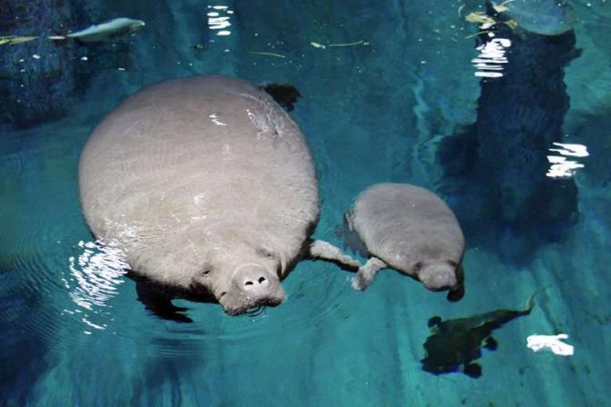
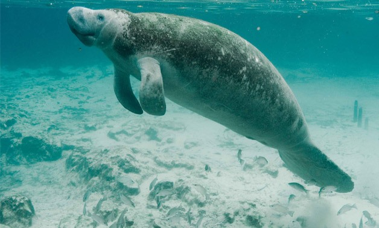

 
Championed by #TeamCanola
Rivers, wetlands and oceans are choked with plastic waste, mostly from land rubbish. This plastic waste is harmful to wildlife and us.
Many river dwelling wildlife get entangled in abandoned fishing nets, plastic bags and other plastic litter. While others mistake plastic waste for food which chokes their digestive system.
She is garnering support to protect her river dwelling friends by reducing single use plastic that have destroyed their homes!
1. Every MINUTE an equivalent of one garbage truck full of plastic waste enters the oceans!
2. SEA countries are among the global top plastic consumers!
3. Only 6% RECYCLED out of 800 million kg of plastic discarded in Singapore!
4. BY 2050 there could be more plastic the ocean than fish by weight!